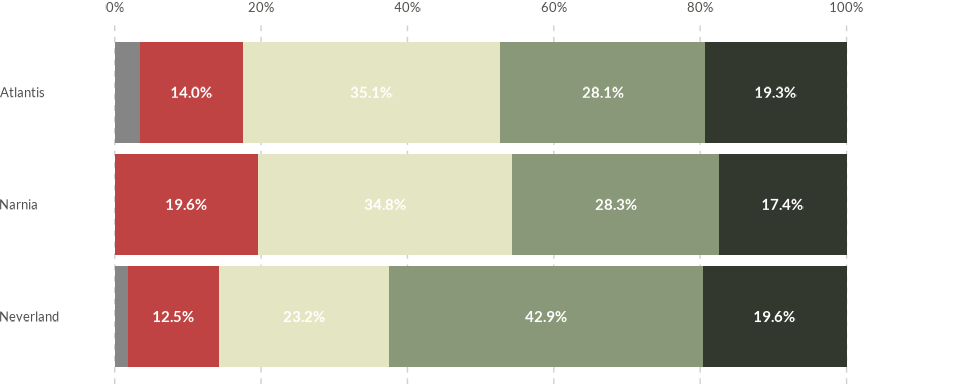
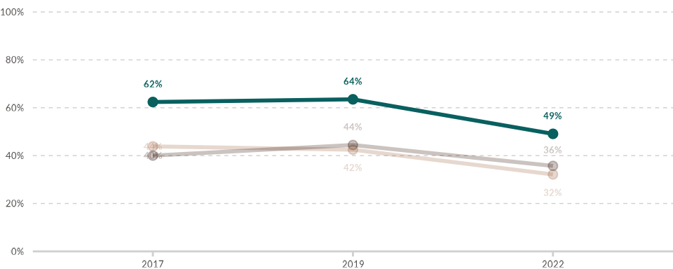

This vignette describes the use of the data visualization functions
included in the WJPr package on a fictional
GPP dataset that is included as part of the package. Until
version 1.0.0, there are eight data viz functions included in the base
package:
- Bars (Horizontal/Vertical/Stacked)
- Diverging Horizontal Bars
- Lines
- Slopes
- Dots
- Dumbbells
- Radar
- Edgebars
library(ggplot2)
#> Error in get(paste0(generic, ".", class), envir = get_method_env()) :
#> object 'type_sum.accel' not found
library(dplyr)
library(tidyr)
library(haven)
library(kableExtra)
library(WJPr)
# Always load the WJP fonts if not passing a custom theme to function
wjp_fonts()
# Loading data
gpp_data <- WJPr::gppBar Charts
Preparing the data
We will begin by plotting a simple vertical chart. When it comes to GPP data, we usually plot percentages of response between groups of respondents. For this task, we will try to plot the percentage of respondents in each country in our GPP dataset that have a lot or some trust in Institution A. This is given by the percentage of people who answered 1 o 2 for question Q1A. Therefore, we proceed to wrangle our data to reflect this:
data4bars <- gpp_data %>%
select(country, year, q1a) %>%
group_by(country, year) %>%
mutate(
q1a = as.double(q1a),
trust = case_when(
q1a <= 2 ~ 1,
q1a <= 4 ~ 0,
q1a == 99 ~ NA_real_
),
year = as.character(year)
) %>%
summarise(
trust = mean(trust, na.rm = TRUE),
.groups = "keep"
) %>%
mutate(
trust = trust*100
) %>%
filter(year == "2022")
kbl(data4bars)| country | year | trust |
|---|---|---|
| Atlantis | 2022 | 49.09091 |
| Narnia | 2022 | 45.65217 |
| Neverland | 2022 | 63.63636 |
Simple vertical chart
Once that we have our data ready, we begin by plotting a very simple
vertical chart with our GPP data. We just need to specify the names of
the columns that contain the values to be plotted in the Y-Axis
(target) and the variable containing the categories to be
displayed in the X-Axis (grouping).
wjp_bars(
data4bars,
target = "trust",
grouping = "country"
)
Controlling color
We can specify the colors to be used using the colors
and the cvec parameters. The colors parameter
contain the name of the column that will distinguish the different
colors, and then, the cvec parameter will pass a named
vector linking specific values to specific colors. In the following
example, we want all the bars to have a cool gray color, therefore, we
use the column “year” as the color parameter and we pass a
named vector in which we specify that values associated to year “2002”
will have a color code equal to “#8789C0”.
wjp_bars(
data4bars,
target = "trust",
grouping = "country",
colors = "year",
cvec = c("2022" = "#8789C0")
)
If we would prefer to have a different color per country, we need to create a new column given that we are already using that same column as the grouping var. In the following example, we first create a new column called “color_variable” containing the same values as the columns “country”
data4bars <- data4bars %>%
mutate(
color_variable = country
)
wjp_bars(
data4bars,
target = "trust",
grouping = "country",
colors = "color_variable",
cvec = c("Atlantis" = "#2E4057",
"Narnia" = "#083D77",
"Neverland" = "#F4D35E")
)
Adding value labels
If we want to add value labels to our chart, we can then make use of
our labels and lab_pos parameters. The first
one contains the name of the column that contains the specific labels to
be displayed. Given that the target parameter might have a
lot of decimals, we usually create a string label rounding the values
plotted in the Y-Axis. Once you have the specific value labels, you
might also need to specify where specifically you would like the labels
to be displayed. In the following example, we create two columns:
“value_label” and “label_position”, we will place the labels 5
percentage points above the top limit of the bars:
data4bars <- data4bars %>%
mutate(
value_label = paste0(
format(
round(trust, 0),
nsmall = 0
),
"%"
),
label_position = trust + 5
)
wjp_bars(
data4bars,
target = "trust",
grouping = "country",
labels = "value_label",
lab_pos = "label_position",
colors = "color_variable",
cvec = c("Atlantis" = "#2E4057",
"Narnia" = "#083D77",
"Neverland" = "#F4D35E")
)Switch to horizontal bars
By default, the plotted bars are vertical. However, making a
horizontal bars plot is as easy as setting the direction
parameter to “horizontal”.
wjp_bars(
data4bars,
target = "trust",
grouping = "country",
labels = "value_label",
lab_pos = "label_position",
colors = "color_variable",
cvec = c("Atlantis" = "#2E4057",
"Narnia" = "#083D77",
"Neverland" = "#F4D35E"),
direction = "horizontal"
)
Stacked Bars
You can also use the wjp_bars() function to plot stacked
bars. Let’s assume that, instead of plotting the percentage of people
who stated that had “A lot” or “Some” trust in Institution A, we prefer
to plot the percentage of people that selected every possible answer in
each country. First, we need to modify our data to reflect this changes
as follows:
data4bars <- gpp_data %>%
filter(
year == 2022
) %>%
select(country, q1a) %>%
mutate(
q1a = case_when(
q1a == 1 ~ "A lot",
q1a == 2 ~ "Some",
q1a == 3 ~ "Little",
q1a == 4 ~ "None",
q1a == 99 ~ "No answer",
),
q1a = factor(
q1a,
levels = c("A lot", "Some", "Little", "None", "No answer")
)
) %>%
group_by(country, q1a) %>%
count() %>%
group_by(country) %>%
arrange(country, desc(q1a)) %>%
mutate(
total = sum(n),
percentage = (n/total)*100,
value_label = paste0(
format(
round(percentage, 1),
nsmall = 1
),
"%"
),
value_label = if_else(percentage >= 5, value_label, NA_character_),
label_position = cumsum(percentage)-(percentage/2)
) %>%
select(
country, q1a, percentage, value_label, label_position
)
kbl(data4bars)| country | q1a | percentage | value_label | label_position |
|---|---|---|---|---|
| Atlantis | No answer | 3.508772 | NA | 1.7543860 |
| Atlantis | None | 14.035088 | 14.0% | 10.5263158 |
| Atlantis | Little | 35.087719 | 35.1% | 35.0877193 |
| Atlantis | Some | 28.070175 | 28.1% | 66.6666667 |
| Atlantis | A lot | 19.298246 | 19.3% | 90.3508772 |
| Narnia | None | 19.565217 | 19.6% | 9.7826087 |
| Narnia | Little | 34.782609 | 34.8% | 36.9565217 |
| Narnia | Some | 28.260870 | 28.3% | 68.4782609 |
| Narnia | A lot | 17.391304 | 17.4% | 91.3043478 |
| Neverland | No answer | 1.785714 | NA | 0.8928571 |
| Neverland | None | 12.500000 | 12.5% | 8.0357143 |
| Neverland | Little | 23.214286 | 23.2% | 25.8928571 |
| Neverland | Some | 42.857143 | 42.9% | 58.9285714 |
| Neverland | A lot | 19.642857 | 19.6% | 90.1785714 |
Pay attention on how we transformed our “q1a” column into a factor variable and we defined the specific levels (order) of answers. By specifying the factor levels, we are taking control on how each answer will be plotted. If we don’t specify the factor levels, the answers will be plotted in alphabetical order, which is not what we want given that our variable of interest is a ordered categorical variable.
Once that we have modified our data to fit the new design of our bar
chart, we proceed to use the wjp_bars() function as showed
above but this time, we set the stacked parameter to
TRUE:
stacked_bar <- wjp_bars(
data4bars,
target = "percentage",
grouping = "country",
labels = "value_label",
lab_pos = "label_position",
colors = "q1a",
cvec = c("A lot" = "#32382E",
"Some" = "#899878",
"Little" = "#E4E6C3",
"None" = "#BF4342",
"No answer" = "#858585"),
direction = "horizontal",
stacked = TRUE
)
stacked_bar
Diverging Bars Charts
Diverging bars are a specific type of bar chart. However, they use the negative part of the cartesian plane to plot additional information. Let’s go back to our prior example where we were displaying the levels of trust that people in our sample had in Institution A. We could use diverging bars to plot the percentage of people who answered “A lot” and “Some” on one side, and the percentage of people who answered “Little” and “None” on the other. For this, we need to wrangle our data a little bit different:
data4divbars <- gpp_data %>%
filter(
year == 2022
) %>%
select(country, q1a) %>%
mutate(
q1a = case_when(
q1a <= 2 ~ "Trust",
q1a <= 4 ~ "No Trust"
)
) %>%
group_by(country, q1a) %>%
count() %>%
filter(
!is.na(q1a)
) %>%
group_by(country) %>%
mutate(
total = sum(n),
percentage = (n/total)*100,
value_label = paste0(
format(
round(percentage, 1),
nsmall = 1
),
"%"
),
value_label = if_else(percentage >= 5,
value_label,
NA_character_),
direction = if_else(q1a == "Trust",
"positive",
"negative"),
percentage = if_else(direction == "negative",
percentage*-1,
percentage),
label_position = (percentage/2)
) %>%
select(
country, q1a, percentage, value_label, label_position, direction
)
kbl(data4divbars)| country | q1a | percentage | value_label | label_position | direction |
|---|---|---|---|---|---|
| Atlantis | No Trust | -50.90909 | 50.9% | -25.45455 | negative |
| Atlantis | Trust | 49.09091 | 49.1% | 24.54545 | positive |
| Narnia | No Trust | -54.34783 | 54.3% | -27.17391 | negative |
| Narnia | Trust | 45.65217 | 45.7% | 22.82609 | positive |
| Neverland | No Trust | -36.36364 | 36.4% | -18.18182 | negative |
| Neverland | Trust | 63.63636 | 63.6% | 31.81818 | positive |
Please pay attention on how we create a variable called “direction” to distinguish the direction in which these values will be plotted. Values associated with a “negative” direction are turned into negative numbers.
Once that we have the data we proceed use the
wjp_divbars() function. Some parameters are used the same
way:
-
targetcontains the column name that has the values to be plotted in the bars. -
groupingcontains the column name that has the categorical groupings. -
cveccontains a named vector linking values to specific color codes. -
labelscontains the column name that has the value labels to be displayed, if any.
Besides these familiar parameters, wjp_divbars() has two
unique ones that are required for this function to work. First, we need
to set a diverging parameter that will contain the column
name used to distinguish the direction of the values, as well as the
negative parameter, which contains the exact value that
distinguishes the negative values from the positive values within the
diverging variable.
wjp_divbars(
data4divbars,
target = "percentage",
grouping = "country",
diverging = "q1a",
negative = "negative",
cvec = c("Trust" = "#4F518C",
"No Trust" = "#2C2A4A"),
labels = "value_label"
)Line Charts
Line charts are an excellent choice to display the evolution of
values over time. You can use the wjp_lines() function to
draw a line chart. Let’s assume that we now want to focus on the
evolution over time of the percentage of people who has “a lot” or
“some” trust in Institution A in Atlantis. First, we need to wrangle the
data to fit our new design:
data4lines <- gpp_data %>%
filter(
country == "Atlantis"
) %>%
select(year, q1a, q1b, q1c) %>%
mutate(
across(
!year,
\(x) as.double(x)
),
across(
!year,
~case_when(
.x <= 2 ~ 1,
.x <= 4 ~ 0,
.x == 99 ~ NA_real_
)
),
year = as.character(year)
) %>%
group_by(year) %>%
summarise(
across(
everything(),
\(x) mean(x, na.rm = TRUE)
),
.groups = "keep"
) %>%
mutate(
across(
everything(),
\(x) x*100
)
) %>%
pivot_longer(
!year,
names_to = "variable",
values_to = "percentage"
) %>%
mutate(
institution = case_when(
variable == "q1a" ~ "Institution A",
variable == "q1b" ~ "Institution B",
variable == "q1c" ~ "Institution C"
),
value_label = paste0(
format(
round(percentage, 0),
nsmall = 0
),
"%"
)
)
kbl(data4lines)| year | variable | percentage | institution | value_label |
|---|---|---|---|---|
| 2017 | q1a | 62.39316 | Institution A | 62% |
| 2017 | q1b | 43.85965 | Institution B | 44% |
| 2017 | q1c | 40.00000 | Institution C | 40% |
| 2019 | q1a | 63.51351 | Institution A | 64% |
| 2019 | q1b | 42.46575 | Institution B | 42% |
| 2019 | q1c | 44.44444 | Institution C | 44% |
| 2022 | q1a | 49.09091 | Institution A | 49% |
| 2022 | q1b | 32.14286 | Institution B | 32% |
| 2022 | q1c | 35.71429 | Institution C | 36% |
Be aware that I’m also leaving trust in Institution B and Institution
C and pivoting the data frame to a long format. However, we will start
by plotting only the percentage of people who trust in Institution A
over time. For this, we proceed to use the wjp_lines()
function. Some parameters are used the same way:
-
targetcontains the column name that has the values to be plotted in the bars. -
groupingcontains the column name that has the categorical groupings. In most line charts, this parameter refers to the years. -
colorscontains the column name that will distinguish the different colors in the line chart. -
cveccontains a named vector linking values to specific color codes. -
labelscontains the column name that has the value labels to be displayed, if any.
Besides these parameters, the wjp_lines() function also
requires to set a ngroups parameter. The way we are setting
this parameter depends on the number of groups. If we are just plotting
a single line just like in the example bellow, we input
ngroups = 1:
wjp_lines(
data4lines %>% filter(institution == "Institution A"),
target = "percentage",
grouping = "year",
ngroups = 1,
colors = "institution",
cvec = c("Institution A" = "#08605F"),
labels = "value_label"
)
Iif we are plotting multiple lines, we need to specify the full
column that contains the groups as in the example bellow. Please also
notice how we are setting repel = TRUE so the value labels
do not overlap between each other. However, you need to have the
ggrepel package loaded in memory.
library(ggrepel)
wjp_lines(
data4lines,
target = "percentage",
grouping = "year",
ngroups = data4lines$institution,
colors = "institution",
cvec = c("Institution A" = "#08605F",
"Institution B" = "#9E6240",
"Institution C" = "#2E0E02"),
labels = "value_label",
repel = TRUE
)Controlling opacities
The wjp_lines() function has a special feature in which
you can add a special highlight to certain lines by assigning different
levels of opacity to different lines. Let’s say that we want to
highlight the line representing the trust levels in Institution A. We
start by setting transparency = TRUE and we pass a named
vector with the opacity levels that we want to assign to different lines
to the transparencies parameter. Please note that the named
vector needs to be based using the same values that were used for the
color vector.
wjp_lines(
data4lines,
target = "percentage",
grouping = "year",
ngroups = data4lines$institution,
colors = "institution",
cvec = c("Institution A" = "#08605F",
"Institution B" = "#9E6240",
"Institution C" = "#2E0E02"),
labels = "value_label",
repel = TRUE,
transparency = TRUE,
transparencies = c("Institution A" = 1.00,
"Institution B" = 0.25,
"Institution C" = 0.25)
)
Controlling the order of the bars
Sometimes, we might want to control the order in which we show some
elements in our charts. Some of the plotting functions in our WJPr
package include the a custom_order and an
order parameter. Let’s say that we want to further
customize the diverging bars that we showed above and present the bars
following in a specific order: Neverland (1), Atlantis (2), and Narnia
(3). For this, we begin by setting the custom_order to TRUE
and adding a new column to our data that has the specific order of the
elements:
data4divbars <- data4divbars %>%
mutate(
order_no = case_when(
country == "Neverland" ~ 1,
country == "Atlantis" ~ 2,
country == "Narnia" ~ 3
)
)
wjp_divbars(
data4divbars,
target = "percentage",
grouping = "country",
diverging = "q1a",
negative = "negative",
cvec = c("Trust" = "#4F518C",
"No Trust" = "#2C2A4A"),
labels = "value_label",
custom_order = TRUE,
order = "order_no"
)
Adding more customizations
All the plotting functions from the WJPr package return a ggplot
object. This means that, with a further knowledge of ggplot, the user
can further customize the plot returned by the plotting function. For
example, let’s say that we want to further customize our stacked bars
from before and completely remove the panel grid and add some title and
subtitle to it. We can do it by using the labs() and
theme() functions from the ggplot2 package as shown
bellow:
stacked_bar +
labs(
title = "Trust in Institution A",
subtitle = "Percentage of people who has a lot, some, little, or no trust in Institution A"
) +
theme(
axis.text.x = element_blank(),
panel.grid.major.x = element_blank(),
plot.title.position = "plot",
plot.subtitle = element_text(face = "italic")
)